Doanh nghiệp có thể tạo tờ khai nộp phí cho từng loại hàng hóa, hãy chọn mục tương ứng dưới đây để xem hướng dẫn chi tiết:
- Tờ khai nộp phí cho hàng Container.
Để thực hiện Tạo tờ khai nộp phí cho hàng cont, doanh nghiệp cần thực hiện các bước sau:
Bước 1: Vào menu “Nghiệp vụ khác/Quản lý thu phí (khu vực cảng Hải Phòng), chọn “Tờ khai nộp phí cho hàng cont”.
(Thông tin mã đơn vị, tên đơn vị mặc định là mã doanh nghiệp, tên doanh nghiệp được thiết lập ở menu Hệ thống, mục 7. Chọn doanh nghiệp xuất nhập khẩu)
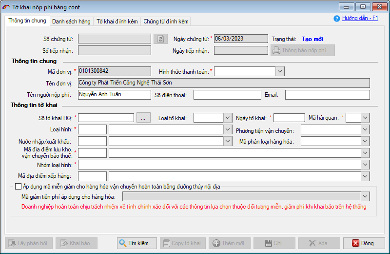
Bước 2: Nhấn vào nút “…” bên phải trường “Số tờ khai HQ” để chọn tờ khai từ Tờ khai hải quan hoặc Tờ khai OLA hoặc Lấy thông tin từ hệ thống Hải quan.
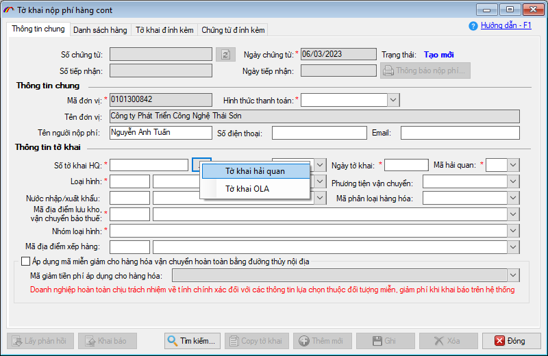
Danh sách tờ khai là những tờ khai đã được khai báo trên Hải Quan, doanh nghiệp có thể tìm kiếm tờ khai muốn khai báo theo các tiêu chí tìm kiếm trên form.
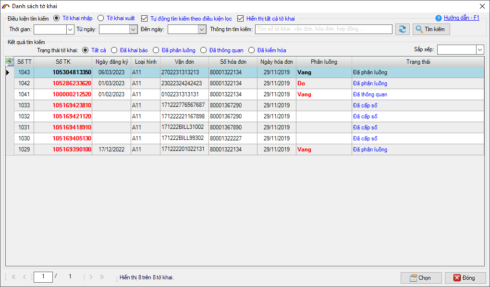
Bước 3: Nhập thông tin khai báo
Tab [Thông tin chung]: thông tin tờ khai được hiển thị tại mục “Thông tin tờ khai” theo thông tin tờ khi đã đăng ký.
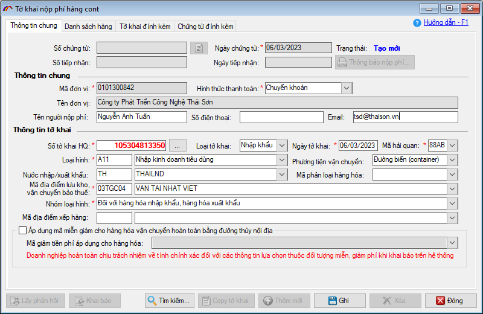
Người dùng tiến hành nhập bổ sung thông tin địa chỉ“Email“
Trường hợp doanh nghiệp thuộc đối tượng được miễn giảm phí cho hàng hóa vận chuyển hoàn toàn bằng đường thủy nội địa thì bạn đánh dấu tích chọn vào Áp dụng mã miễn giảm cho hàng hóa vận chuyển hoàn toàn bằng đường thủy nội địa. Sau đó chọn mã áp dụng trong danh sách:
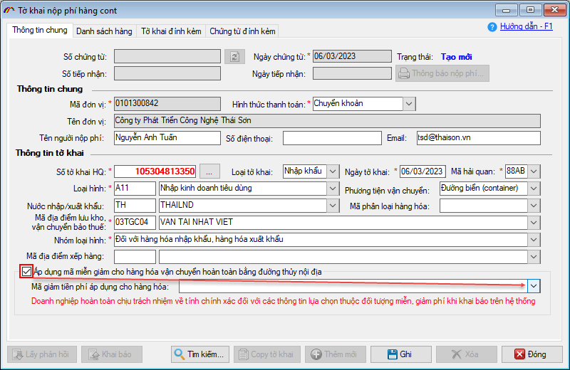
Tab [Danh sách cont]: Nếu tờ khai có khai báo danh sách cont thì khi chọn tờ khai thông tin cont và vận đơn sẽ được hiển thị tại đây. Người dùng có thể nhập thông tin cont bằng cách nhập trực tiếp, hoặc import theo danh sách bằng cách nhấn “F6”, nhấn “F8” để xóa đi 1 dòng cont hoặc nhấn “F11” để xóa cả danh sách cont.
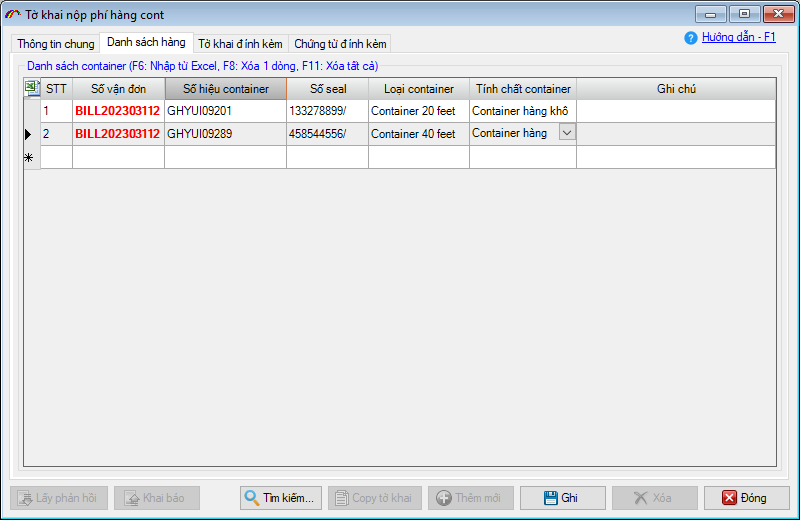
Tab [Tờ khai đính kèm]: trong trường hợp có nhiều tờ khai chung cont, Doanh nghiệp có thể chọn nhiều tờ khai trong 1 lần khai báo, bằng cách nhấn nút “Chọn tờ khai” và tích chọn các tờ khai cần khai báo;
Khi chọn dữ liệu tờ khai đính kèm với hàng cont, chương trình tự động load số cont trên tờ khai đính kèm vào Danh sách cont
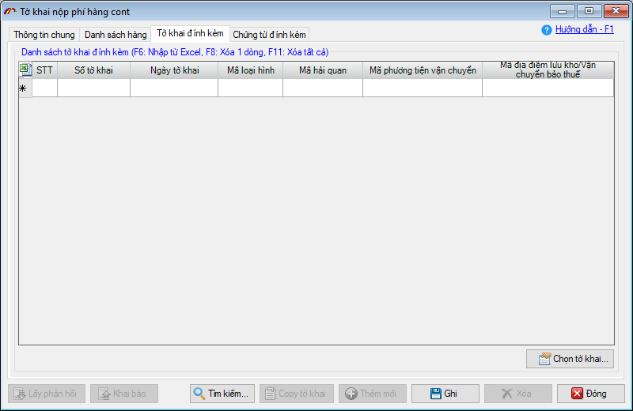
Ngoài ra tab [Chứng từ đính kèm], doanh nghiệp có thể thêm file chứng từ đính kèm.
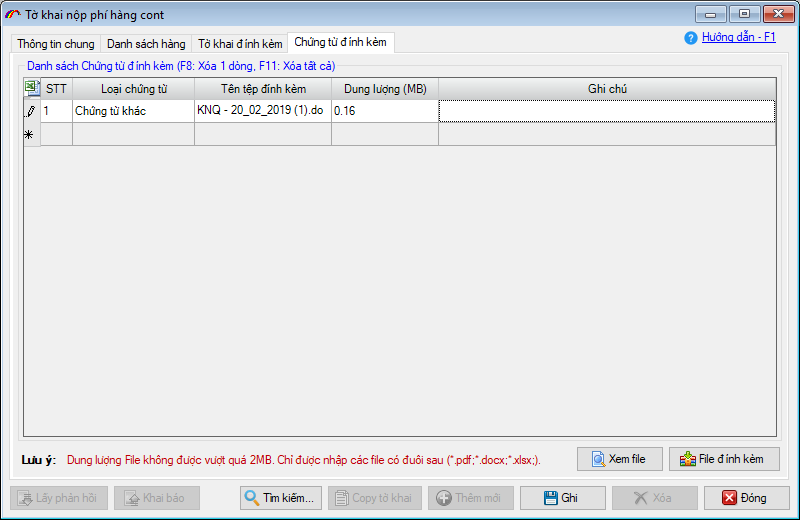
Doanh nghiệp nhấn nút “File đính kèm” để thêm file vào tờ khai báo. Doanh nghiệp có thể chọn loại chứng từ tương ứng với file đính kèm. Khi đính kèm file lên tờ khai, doanh nghiệp có thể xem file đã đính kèm bằng cách nhấn nút “Xem file”
Lưu ý: File đính kèm không được vượt quá 2MB và chỉ được nhập các file có đuôi: *.pdf, *.xlsx, *.docx.
Bước 4:Nhấn nút “Ghi” để tạo mới tờ khai
Bước 5: Nhấn nút “Khai báo” để gửi thông tin tờ khai lên hệ thống Quản lý thu phí, hệ thống sẽ trả lại thông tin số tiếp nhận
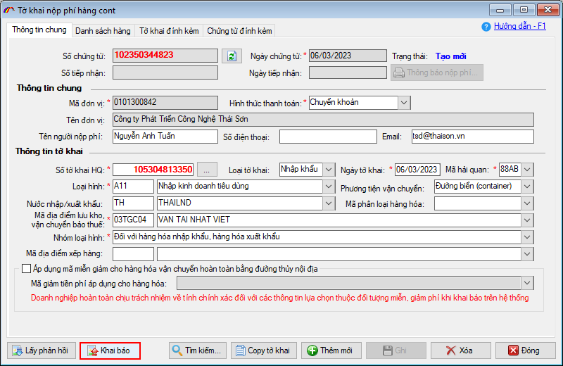
Sau khai báo chương trình tự động nhận kết quả từ hệ thống thu phí trả sẽ trả về tab [Thông báo nộp phí], doanh nghiệp nhấn nút “Thông báo nộp phí...” để hiển thị danh sách thông báo nộp phí trả về. Trạng thái của tờ khai là Đã có thông báo nộp phí
Tại đây, bạn chọn một dòng thông báo và nhấn nút Xem file... để xem và in ra giấy.
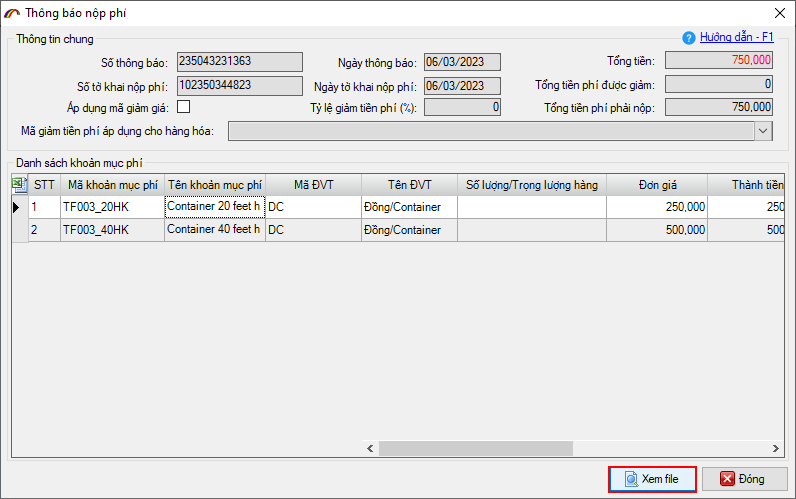
Mẫu thông báo nộp phí cho hàng Cont:
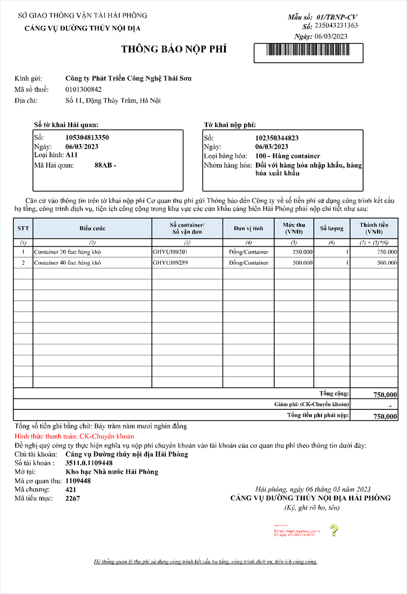
Doanh nghiệp tiến hành nộp tiền bằng hình thức chuyển khoản vào tài khoản của Cảng vụ đường thủy nội địa Hải phòng được ghi chi tiết trong thông báo nộp phí:
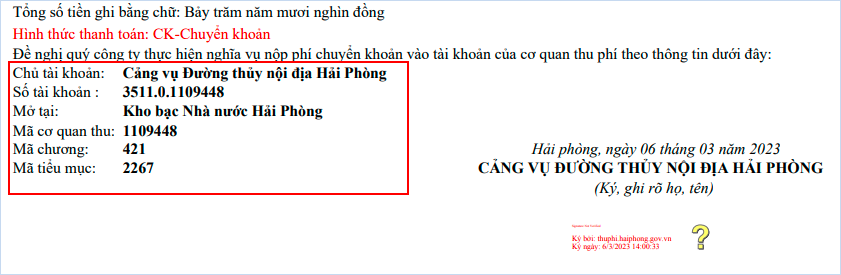
Để khai báo nộp phí cho hàng lỏng, rời thì doanh nghiệp vào menu “Nghiệp vụ khác”, chọn “Quản lý thu phí (khu vục cảng Hải Phòng)”, chọn “Tờ khai nộp phí cho hàng lỏng, rời”.
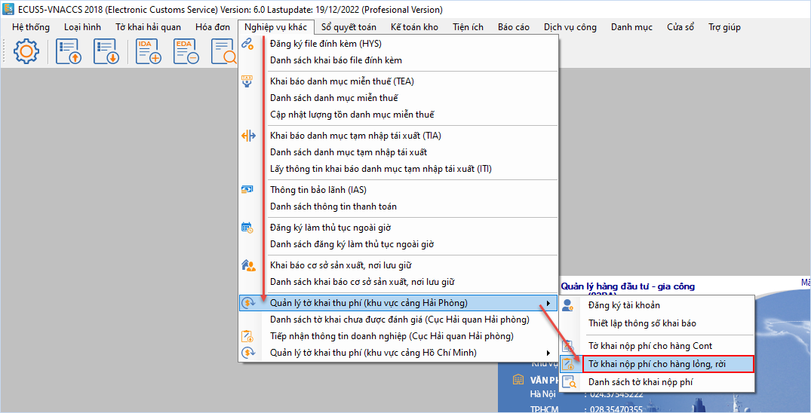
Bạn chọn hình thức thanh toán và nhập vào thông tin liên hệ tại mục Thông tin chung.
Tại thông tin tờ khai, bạn nhấn vào nút ... và chọn nguồn lấy tờ thông tin từ Tờ khai hải quan hoặc Tờ khai OLA:
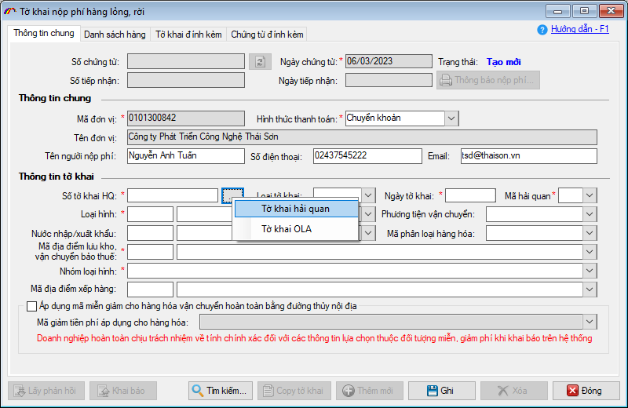
Thông tin tab [Danh sách hàng]: Doanh nghiệp cần phải nhập dữ liệu vào các trường “Số vận đơn”, “Trọng lượng”, “Đơn vị tính”. Người dùng có thể nhập thông tin hàng bằng cách nhập trực tiếp, hoặc import theo danh sách bằng cách nhấn “F6”, nhấn “F8” để xóa đi 1 dòng hàng, hoặc nhấn “F11” để xóa cả danh sách hàng.
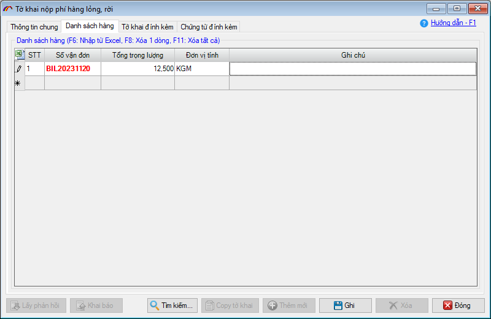
Thông tin [Tờ khai đính kèm], [Chứng từ đính kèm] cách nhập liệu cũng tương tự đối với tờ khai thu phí cho hàng cont.
Sau khi nhập xong thông tin cho tờ khai nộp phí, doanh nghiệp Ghi lại và tiến hành khai báo:
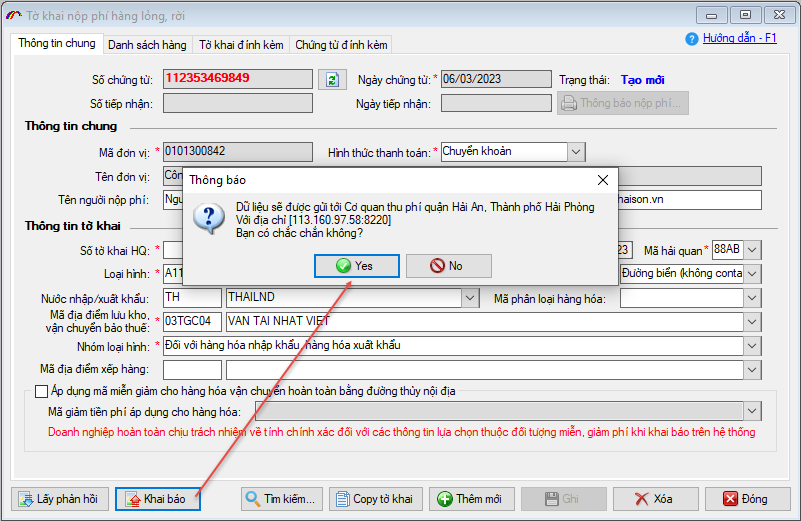
Sau đó lấy phản hồi cho đến khi nhận được thông báo có thông báo nộp phí:
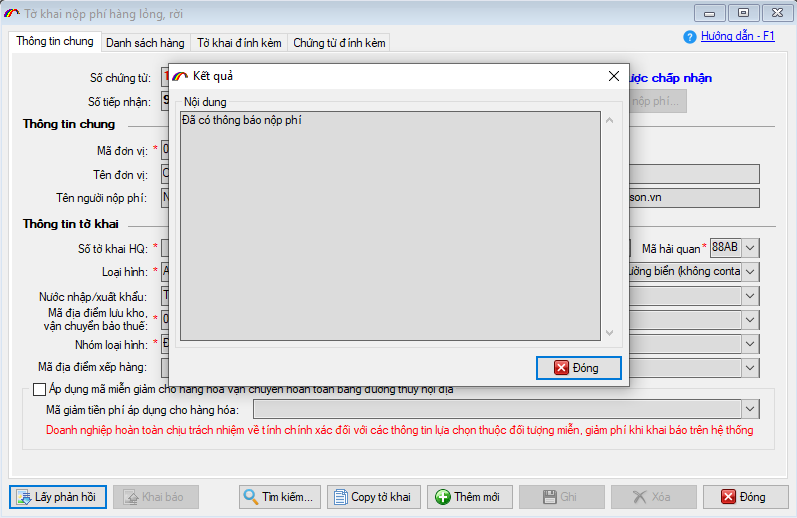
Bạn nhấn chọn từng dòng thông báo trong danh sách và nhấn nút Xem file... để xem nội dung và in ra:
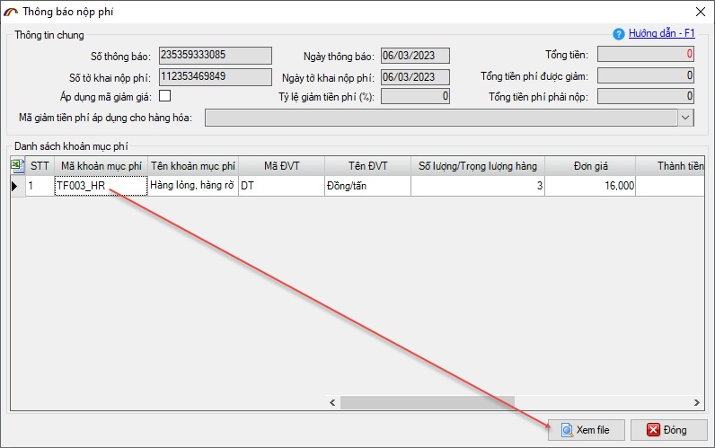
Mẫu thông báo nộp phí cho hàng rời, lỏng:
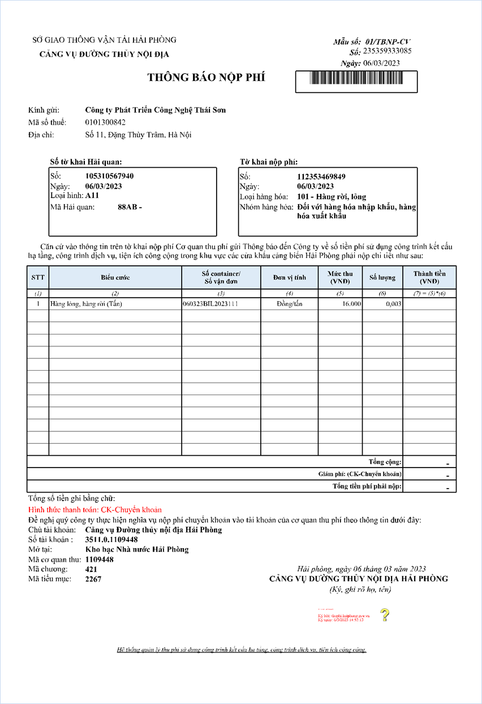